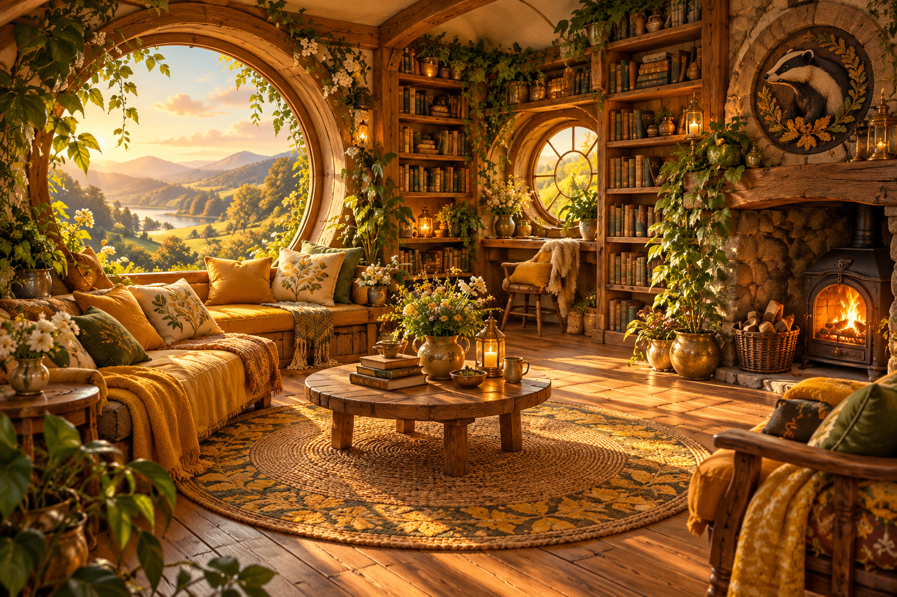
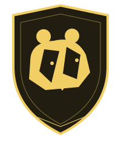

Cedric Diggory
Deportividad y sentido de la justicia.
Aquí, todos tienen un lugar
Los grandes logros también nacen de la paciencia, del trabajo constante y del cuidado de los demás.


Helga Hufflepuff ayudó a fundar Hogwarts y valoró el trabajo, la paciencia y el trato justo. Su casa recibe a estudiantes que construyen comunidad. La sala común está cerca de las cocinas, en un espacio cálido y acogedor.
La asociación elemental es simbólica. Los emblemas de este sitio son interpretaciones gráficas.
Una casa reúne historias distintas. Sus valores se expresan de maneras diversas.
Deportividad y sentido de la justicia.
Auror capaz de cambiar su apariencia.
Curiosidad y cuidado por las criaturas mágicas.
“La constancia hace crecer lo que cuidamos.”FRASE ORIGINAL PARA ESTE EJEMPLO · NO ES UNA CITA DE LA SAGA
Regla 60-30-10 orientativa: base oscura dominante, superficies e imagen como apoyo, y acento para detalles, enlaces y símbolos.
Una familia local distingue a la casa. El texto de lectura mantiene la familia Archivo y una longitud cómoda de línea.
Contenido adaptado con fines educativos de HarryPotter.com. Frase original; escena generada y escudo reinterpretado.